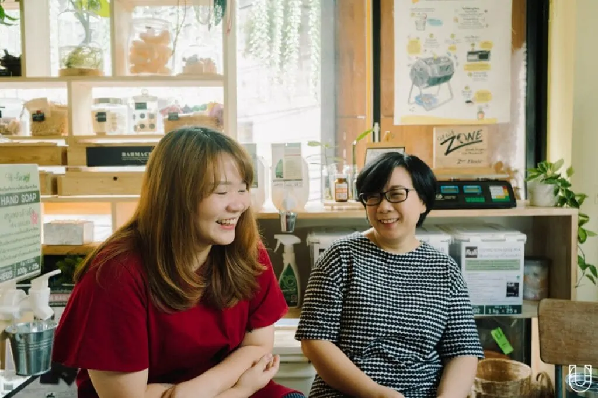
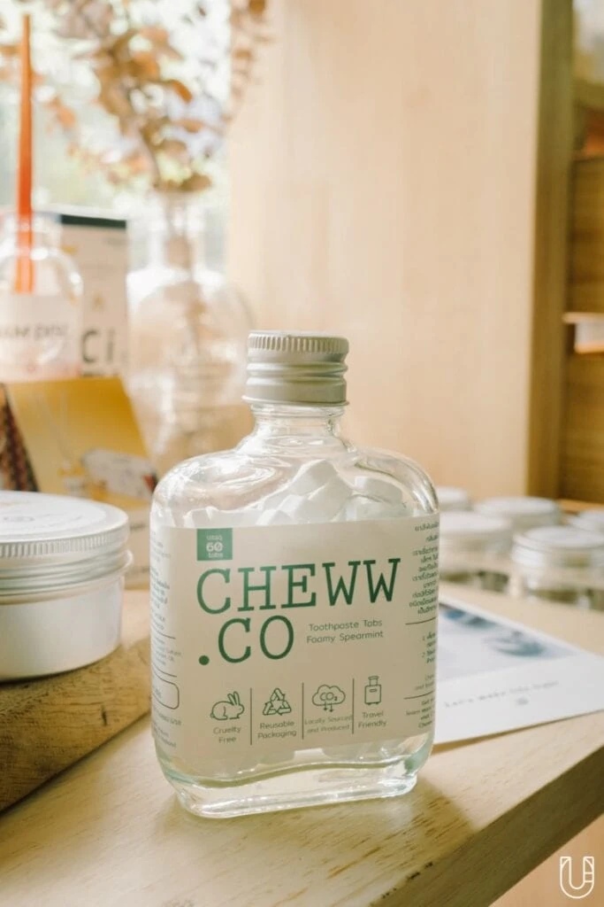
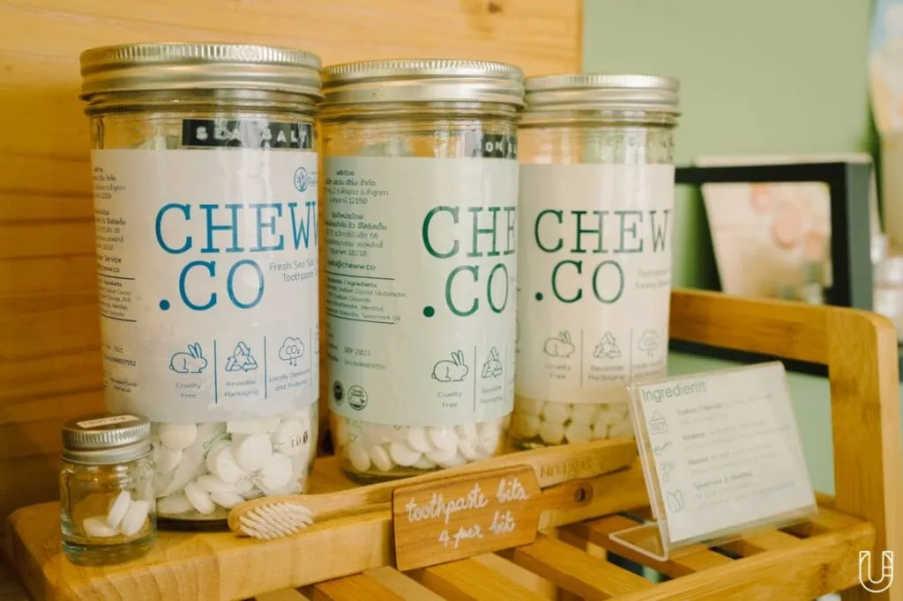
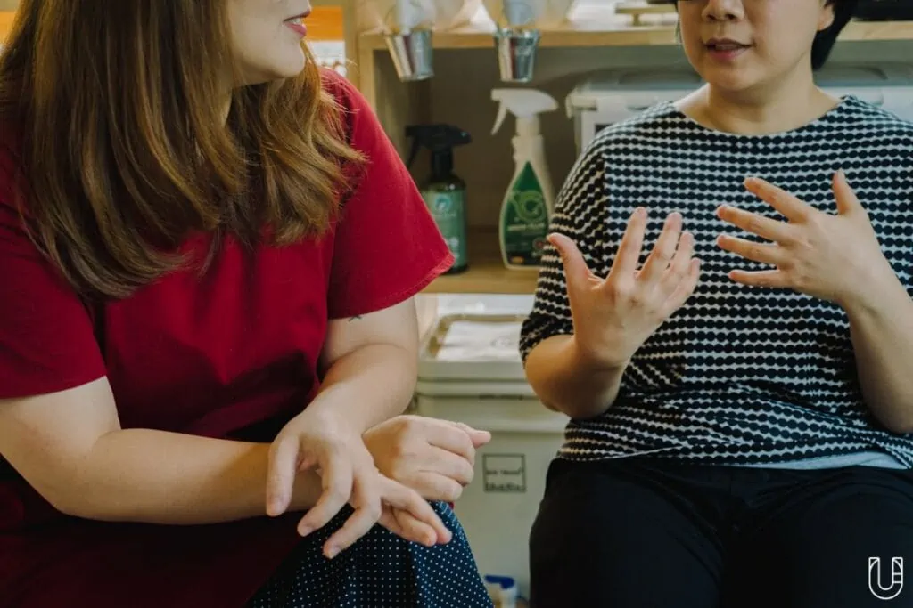
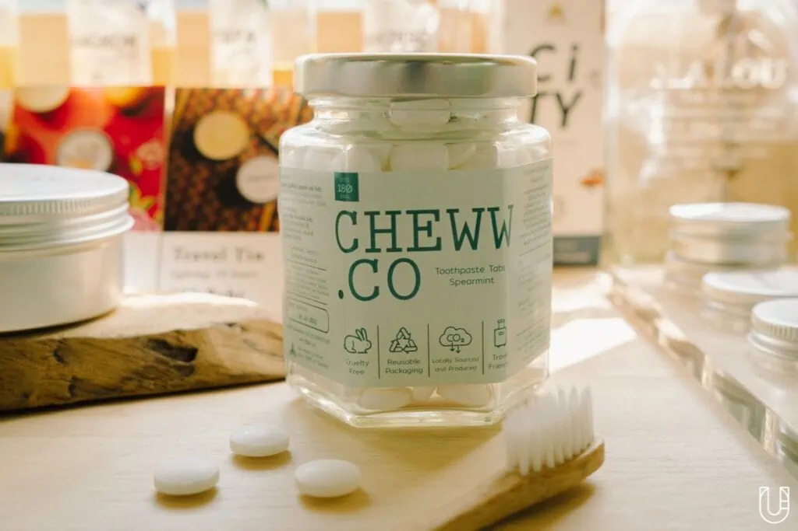

กลั้วปาก แปรงฟัน แปรงลิ้น บ้วนปาก และขัดฟัน
สารพัดขั้นตอนเพื่อทำความสะอาดช่องปาก และสร้างลมหายใจสดชื่นรับเช้าวันใหม่ให้เรากล้าพูด กล้าคุยกับคู่สนทนามากเป็นพิเศษ ไม่ต่างจากโฆษณายาสีฟันที่เราเห็นตามโทรทัศน์ อีกทั้งการแปรงฟันยังเป็นส่วนหนึ่งในกิจวัตรประจำวันที่ต้องทำอย่างน้อยวันละ 2 ครั้ง พร้อมกับอุปกรณ์จำเป็นเพียง 2 อย่าง คือ แปรงสีฟัน และยาสีฟัน
เป็นไปได้ไหม ? ที่การแปรงฟันของเรา 1 ครั้งจะส่งผลกระทบต่อสิ่งแวดล้อม
ถ้าให้คิดไวๆ ก็คงรู้สึกว่ามันไม่ได้ส่งผลกระทบอะไรนัก เพราะอุปกรณ์ที่ใช้มีน้อยชิ้น ขั้นตอนก็มีไม่กี่สเต็ป แถมเวลาแปรงต่อครั้งก็ไม่เกิน 2 นาที แล้วการแปรงฟันของมนุษย์มันจะสะเทือนถึงสิ่งแวดล้อมได้อย่างไร แต่เมื่อเราได้สนทนากับ cheww.co (ชิวว์ดอทโค) ก็ทำให้เรารู้ว่าไม่เพียงแค่ขั้นตอนการแปรงฟัน แต่ต้องย้อนไปถึงต้นกระบวนการผลิตด้วย
เบื้องหลังยาสีฟัน 1 เม็ด
‘หลิว–เกวลิน ศักดิ์สยามกุล’ และ ‘ตุ๊กตา-ดร.ตรีชฎา โชติรัตนาภินันท์’ ผู้ร่วมก่อตั้งจากแบรนด์ยาสีฟันเม็ดรีฟิลที่รู้จักกันจากรั้วมหาวิทยาลัยศิลปากรในฐานะครูกับศิษย์ ผ่านหลักสูตรการออกแบบผลิตภัณฑ์เพื่อความยั่งยืน (Sustainable Product Design) ซึ่งเป็นวิชาที่จุดประกายให้หลิวสนใจเรื่องสิ่งแวดล้อมมากยิ่งขึ้น แล้วมีไลฟ์สไตล์แบบ ‘เขียวๆ’ มากกว่าเดิม แต่ผลิตภัณฑ์ส่วนใหญ่ โดยเฉพาะยาสีฟันที่ตอบโจทย์การใช้ชีวิตรักษ์โลกของหลิวได้ดีจะต้องนำเข้าจากต่างประเทศ ทำให้หลิวรู้สึกว่า ‘ทำไมไม่สร้างขึ้นมาเองเลยล่ะ ?’

“เราเห็นแหละว่ายาสีฟันแบบเม็ดที่เมืองนอกเขามีมาสักพัก เราก็ไม่เข้าใจว่าถ้าเราอยากเป็นคนที่ใช้ชีวิตอย่างยั่งยืนเพิ่มขึ้นมาอีกสักนิด เราจะต้องซื้อของนำเข้าตลอดกาลเลยเหรอ ซึ่งอะไรที่ต้องนำเข้ามามันไม่ได้ดีต่อสิ่งแวดล้อมขนาดนั้น อีกอย่างไหนๆ มันไม่มี เราก็ทำสิ่งที่มันไม่มีให้มีขึ้นมาดีกว่า”
ส่วนสูตรยาสีฟันเม็ดได้มาจากญาติทั้งสองคนของหลิว ซึ่งเป็นเภสัชกรและพาร์ทเนอร์เข้ามาพัฒนาสูตร อีกทั้งหลิวสนใจอยู่เป็นทุนเดิม จึงชวนให้มารวมตัวทำแบรนด์ด้วยกัน โดยมีเงื่อนไขว่าขอเอามาทำในแนวรักษ์โลก ให้ตรงกับคุณค่าที่หลิวยึดถือไว้ ประจวบเหมาะกับเวลาที่ประเทศไทยเริ่มตื่นตัวถึงสิ่งแวดล้อม เลยเหมือนประกายไฟที่จุดต่อๆ กัน นำไปสู่การลงมือทำ
หนึ่งชีวิตของยาสีฟันชิวว์
ต้องบอกว่าก่อนมาสัมภาษณ์ เราทำการบ้านเกี่ยวกับชิวว์ดอทโค และพบภาพหนึ่งภาพที่เป็นมายแมพ 1 แผ่น เต็มไปด้วยข้อความบนหน้ากระดาษ พร้อมกับคำว่า ‘Life Cycle Analysis’ เราจึงหยิบขึ้นมาถามด้วยความสงสัยว่าคืออะไร ทั้งสองยิ้มแล้วตอบรับพร้อมกันว่า “มันคือความเนิร์ดของเหล่า Co-Founder”

อ.ตุ๊กตา เสริมว่า “มันคือหลักการในกระบวนการคิดโปรดักซ์อย่างยั่งยืน ที่เขาเรียกว่า Life Cycle Analysis-LCA คือเครื่องมือสำหรับใช้วัดผลกระทบเชิงลบต่อสิ่งแวดล้อมในทุกๆ ขั้นตอนของชีวิตผลิตภัณฑ์หนึ่งชิ้น ยกตัวอย่าง ถ้าเราประเมินจากยาสีฟันรูปแบบเดิมๆ เช่น ยาสีฟันแบบหลอด เราก็จะได้ตัวเลขมาประมาณหนึ่ง แล้วถ้าเราอยากทำยาสีฟันรูปแบบใหม่ที่ลดผลกระทบ เราจะลดยังไง ลดขั้นตอนไหน ลดช่วงไหน ให้มันเกิดประสิทธิภาพสูงที่สุด ดังนั้นรูปแบบยาสีฟันเม็ดจึงเป็นคำตอบในทุกสมการของเครื่องมือนี้ ซึ่งตีออกมาได้ทั้งหมด 5 ขั้นตอน”
- Extraction = การได้มาซึ่งวัตถุดิบ
- Production = กระบวนการผลิต
- Distribution = การจำหน่าย
- Use = การบริโภค
- End of Life = หลังการใช้งาน
ถึงแม้จะคิดแต่ละขั้นตอนอย่างรอบคอบ หวังที่จะลดขยะหรือลดกระบวนการบางอย่าง เพื่อให้กระทบต่อสิ่งแวดล้อมน้อยที่สุดเท่าที่จะทำได้ แต่ชิวว์ยังเผชิญหน้ากับปัญหาให้วิ่งวุ่นแก้ไขจากปัจจัยที่ควบคุมยาก เริ่มจากขั้นตอนการหาวัตถุดิบ (Extraction) จุดเริ่มต้นของผลิตภัณฑ์ทุกชิ้น คือต้องหาสิ่งที่เป็นวัตถุดิบก่อน ซึ่งหลิวเองอยากใช้วัตถุดิบในประเทศทั้งหมด สอดคล้องกับ ‘Locally Sourced Produce’ แต่เมื่อนำมาผลิตจริง ต้นทุนกลับสูงกว่าที่คาดไว้ ทำให้ต้องลดเหลือเพียง ‘สเป็คตามต้องการ’ ให้กับทางโรงงานไปเฟ้นหาต่อและตรงกับเงินทุนที่มีอยู่ในมือ
ถัดมาคือเรื่องกระบวนการผลิต (Production) พอเป็นยาสีฟันชนิดเม็ดสามารถตัดน้ำออกจากกระบวนการผลิตได้ 100% และตัดสารเคมีที่ทำให้คงรูปออกไป หลังจากนั้นเอามาผลิตเป็นผงแล้วเอามาอัดใส่โมเดลตามรูปทรง ถ้าหากมีอันไหนเสียก็แค่นำไปอัดใหม่ แต่ความเป็นจริงมันอยู่ในรูปแบบของฝุ่น ซึ่งเป็นสิ่งที่นำกลับมาใช้ต่อไม่ได้
ส่วนที่ผิดจากแผนมากที่สุดในทุกขั้นตอนคือ การจำหน่าย (Distribution) เพราะชิวว์ตั้งใจให้บรรจุภัณฑ์เป็น ‘ขวดแก้ว’ เพื่อเอากลับมาหมุนใช้ได้ตลอด แต่บางครั้งลูกค้าลืมเอามา หรือไม่เอากลับมาใช้ต่อ ถึงแม้จะมีการกระตุ้นก็ตาม ทำให้แบรนด์ต้องหันกลับมามองว่าจะทำอย่างไรต่อไปดี เนื่องจากการผลิตขวดแก้วก็มีกระบวนการผลิตที่สร้างผลกระทบเหมือนกัน รวมถึง ‘อากาศชื้น’ ที่ส่งผลต่อยาสีฟันเม็ด ซึ่งเป็นส่วนที่ควบคุมไม่ได้

สุดท้ายคือ การบริโภค (Use) ซึ่งเป็นส่วนที่แม้แต่ตัวของผู้เขียนเอง ยอมรับว่ามองข้ามผลกระทบจากมันไป หลิวมองว่าแค่แปรงสีฟันที่เป็นพลาสติก มันก็คือการสร้างขยะ หรือแม้แต่แบรนด์พยายามสร้าง ‘แปรงไม้ไผ่’ แต่ไนลอนที่เอามาทำส่วนขนแปรงไม่สามารถย่อยสลายได้ ส่วนขั้นตอนการแปรงฟันเองก็ตาม
“หลายคนชินกับการกลั้วปากก่อนแปรงฟันเท่ากับใช้น้ำ 1 ครั้ง หลังแปรงเสร็จแล้วบ้วนเท่ากับใช้น้ำครั้งที่ 2 หรือมากกว่านั้น รวมถึงบางคนมีปัญหาเรื่องสุขภาพช่องปาก ซึ่งอาจแปรงมากกว่า 1 รอบต่อครั้ง ฉะนั้นมันอิงกับพฤติกรรมมนุษย์เยอะมาก แม้แต่การบ้วนน้ำออกไปสารเคมีต่างๆ ที่อยู่ในยาสีฟัน มันไปพร้อมกับน้ำ เรายังไม่ได้พูดถึงการบำบัดน้ำเสียต่อเนื่องไปจากตรงนั้น หรือสารใดๆ ก็ตามที่เราใส่ไปกับยาสีฟันมันจะกลับไปสู่แหล่งน้ำธรรมชาติอย่างไร รวมถึงพิกเมนต์สี หรือพลาสติกไมโครบีทด้วย” หลิวพูดถึงผลกระทบ
“จริงๆ ต้องบอกว่าทุกการกระทำ ทุกพฤติกรรมของมนุษย์มันส่งผลกระทบต่อสิ่งแวดล้อมอยู่แล้ว หรือแม้แต่เราหายใจเฉยๆ ก็สร้าง Carbon Footprint ยังไงเราก็เลี่ยงไม่ได้ที่จะสร้างผลกระทบ แต่อย่างการแปรงฟัน เราทำเช้า-เย็นทุกวัน และทำตลอดชีวิต ถ้ามองในมวลที่เป็นผลกระทบที่เกิดขึ้นมันเลยเป็นเรื่องที่ใหญ่มาก” อ.ตุ๊กตาเสริม
นอกจากนี้หลิวยังเสริมว่าการใช้ยาสีฟันที่มีฟองเยอะ มันทำให้เรารู้สึกสดชื่นจริง แต่เป็นการเพิ่มปริมาณการใช้น้ำเกินความจำเป็น เพราะมองว่าฟังก์ชันการแปรงฟัน คือการใช้แปรง แต่ยาสีฟันเป็นส่วนเสริมที่เป็น Cosmetic ของการแปรงฟันที่ไม่มีก็แปรงได้ แค่จะไม่รู้สึกสดชื่นเท่านั้นเอง
มากกว่ากระแสคือสร้างความเปลี่ยนแปลง
แม้จะเปิดตัวยาสีฟันชนิดเม็ดให้คนได้จับจ่ายมาเพียง 1 ปีกว่า แต่ความตั้งใจของชิวว์เป็นมากกว่าแค่ ‘เทรนด์’ สั้นๆ ที่เห่อของใหม่แล้วจบไป เพราะยึดการสร้าง ‘ความตระหนักรู้’ ให้กว้างกว่าที่เป็นอยู่ เพื่อสร้างความเปลี่ยนแปลงเชิงพฤติกรรม อีกทั้งสองผู้ร่วมก่อตั้งมองภาพกลุ่มตลาดไว้เป็น ‘Business to Consumer (B-to-C)’ คือ การค้าระหว่างผู้ค้ากับผู้บริโภคโดยตรง เหมือนเราไปซื้อหนังสือจากร้านขายหนังสือ ซึ่งมันส่งต่อได้ทีละคน ค่อยๆ ไปทีละเล็กน้อย
แต่ผ่านมาสักระยะกลายมาเป็น ‘Business to Business (B-to-B)’ คือ การค้าระหว่างผู้ประกอบการก่อนถึงมือผู้บริโภค โดยธุรกิจบริการที่พัก ไม่ว่าจะเป็นโฮสเทล หรือโรงแรมต่างให้ความสนใจ เนื่องจากกระแส ‘รักษ์โลก’ เป็นการเปลี่ยนแปลงระดับโลกที่หลายประเทศให้ความสำคัญ และธุรกิจต้องปรับตัวเพราะผู้บริโภคมีความต้องการมากขึ้น ดังนั้นชิวว์จึงเป็นทางเลือกที่ตอบวิสัยทัศน์เหล่านั้นได้อย่างดี และได้ร่วมงานกับหลายๆ แห่ง

“อาจารย์มองว่าจุดที่ทำให้รู้สึกดีที่สุด คือต่อยอดจากความตั้งใจที่ทำ B to C ซึ่งเรารอคนหนึ่งคนมาซื้อ เท่ากับมันเกิดการเปลี่ยนแปลงต่อหนึ่งคน ค่อยๆ เปลี่ยนไปทีละนิดๆ แต่พอเป็น B to B เริ่มมีเจ้าใหญ่เข้ามา เรามีการทำงานที่เป็นซัพพลายเออร์ มันส่งต่อได้ไวกว่า คือช่วยให้คนได้เปลี่ยนพฤติกรรม หรือได้ลองประสบการณ์ใหม่ที่ทำให้เขาได้เปลี่ยนตัวเอง ซึ่งมันไม่ใช่แค่เรื่องของการแปรงฟันแล้ว แต่เป็นการเปิดประตูไปสู่สิ่งอื่นๆ เรามองว่าสิ่งที่เกิดขึ้นเป็นผลกระทบเชิงบวก มันชื่นใจมากกว่า”
“ที่หลิวเจอคือบางคนไม่เริ่มต้นจากการรักษ์โลกด้วยซ้ำ แต่เขาได้ไปลองใช้ตามโฮสเทลหรือโรงแรมแล้วรู้สึกชอบผลิตภัณฑ์ มันเป็นการเปิดประตูให้เขาได้มีประสบการณ์กับยาสีฟันเราเท่านั้น”
‘แล้วอะไรคือความท้าทายที่ชิวว์กำลังเผชิญหน้าอยู่ ?’ ‘การเติบโตเป็นธุรกิจที่ใหญ่ขึ้น’
หลายคนมักมีเป้าหมายที่อยากเติบโตในแง่ของธุรกิจ ซึ่งทีมชิวว์เองก็รู้สึกแบบนั้น แต่จะโตอย่างไรไม่ให้เสียตัวตน และยังคงความยั่งยืนได้มากที่สุด เพราะหลายครั้งที่อะไรเยอะๆ มันส่งผลให้ควบคุมยาก โดยความตั้งใจแรกมันบริสุทธิ์ที่สุด แต่บางปัจจัยไม่อาจหลีกเลี่ยงได้ ทางชิวว์ก็อยากปกป้องความบริสุทธิ์เหล่านั้นให้ปนเปื้อนน้อยที่สุด
ยาสีฟันชิวว์ที่ไม่ชิลเรื่องความยั่งยืน
ตลอดการพูดคุยร่วมชั่วโมงเราได้แลกเปลี่ยนแง่มุมที่มีต่อสิ่งแวดล้อมจากหลิวและ อ.ตุ๊กตา จนค่อยๆ เห็นภาพ ‘ชิวว์’ ตัวใหญ่ขึ้นกว่าเดิม และเป็นมากกว่าแบรนด์ยาสีฟันที่อยากลดขยะพลาสติกอย่างเดียว ซึ่งทั้งสองมองว่าทุกครั้งที่สื่อสารออกไป ชิวว์มุ่งมั่นสร้างความตระหนักเรื่องสิ่งแวดล้อมออกมาเป็นเรื่องง่ายๆ ในภาษาชิวว์
“เรากำลังมอบจุดเริ่มต้นให้กับคนที่อยากเปลี่ยนแต่ไม่รู้จะเปลี่ยนยังไง มันเหมือนเราในวันแรกที่อยากเปลี่ยนแต่ไม่รู้จะเปลี่ยนอย่างไรก็เลยเริ่มมันขึ้นมา จริงๆ ยาสีฟันเม็ดละ 4 บาท มันก็ช่วยคุณได้เปลี่ยนหนึ่งครั้งแล้วนะ เรื่องความยั่งยืนเราแยกมันไม่ออกระหว่างมนุษย์ สัตว์ สภาพแวดล้อมต่างๆ ที่เขามีชีวิตเหมือนกัน แต่เราจะทำยังไงให้ผ่อนหนักเป็นเบา แล้วช่วยให้สิ่งมีชีวิตอื่นๆ อยู่บนโลกนี้ได้อย่างไร ซึ่งยาสีฟันเม็ดอาจเป็นจุดหนึ่งที่ทำให้เขาตระหนักและเริ่มเปลี่ยนตัวเอง เพื่อต่อยอดไปยังเรื่องใหญ่อื่นๆ ให้ตามมา”

สามารถสั่งซื้อผลิตภัณฑ์ยาสีฟันแบบเม็ดได้ที่ cheww.co หรือเช็กสาขาอื่นๆ ได้ที่ https://bit.ly/2G4R7Eq